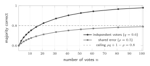
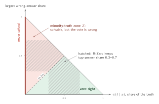

17 When does voting find the truth? The theory of shared errors
Majority voting is the default answer key of label-free self-play. This section asks exactly when the vote is right, why it fails, and what any replacement must do better. Together with Section 18, it is the most important part for finding a new method: it ends with a map of the channels a new signal can use (Section 17.8) and a worksheet for testing one (Section 17.9).
17.1 Independent voters: Condorcet’s theorem and its rate
\(n\) independent voters, each correct with probability \(q\) on a two-option question: \[P_{\mathrm{maj}}(n)=\sum_{k>n/2}\binom nk q^k(1-q)^{n-k}\ \xrightarrow[n\to\infty]{}\ \begin{cases}1,&q>1/2\\0,&q<1/2.\end{cases}\] How fast. For \(q>1/2\), Hoeffding’s inequality gives \(\Pr[\text{majority wrong}]\le\exp\!\big(-2n(q-\tfrac12)^2\big)\): the error vanishes exponentially.
\(q=0.6\), \(n=9\): the terms for \(k=5,\dots,9\) are \(0.251,\ 0.251,\ 0.161,\ 0.060,\ 0.010\), so \(P_{\mathrm{maj}}=0.733\). Nine weak voters beat one. With \(n=101\) the bound gives an error of at most \(0.133\); the exact error is \(0.021\).
17.2 Many answers: the vote converges to the mode
Let \(\pi(a\mid x)\) be the Solver’s answer distribution and \(t\) the true answer. As \(n\to\infty\), the plurality vote returns the mode \(\arg\max_a\pi(a\mid x)\) (when the mode is unique). For each wrong answer \(w\) with \(\pi(w\mid x)<\pi(t\mid x)\), \[\Pr\big[\,w\text{ gets at least as many votes as }t\,\big]\le\exp\!\Big(-\tfrac n2\,\big(\pi(t\mid x)-\pi(w\mid x)\big)^2\Big),\] and a union bound over the wrong answers bounds the chance that the vote misses \(t\).
Derivation. Score each sample \(+1\) if it says \(t\), \(-1\) if it says \(w\), and \(0\) otherwise. The mean score is \(\pi(t\mid x)-\pi(w\mid x)\) and each score lies in an interval of length \(2\), so Hoeffding’s inequality bounds the chance that the sum is \(\le0\) by \(\exp(-2n\Delta^2/2^2)=\exp(-n\Delta^2/2)\).
Two consequences. (i) In the limit, the vote is right exactly when the truth is the mode; more samples only estimate the mode better. (ii) The margin \(\Delta=\pi(t\mid x)-\max_{w\neq t}\pi(w\mid x)\) decides how many samples are needed.
The truth \(22\) has \(\pi=0.40\), the wrong answer \(20\) has \(0.35\), and five other answers have \(0.05\) each. With \(10\) votes the plurality picks \(22\) only \(56\%\) of the time and \(20\) in \(42\%\) (exact multinomial count, ties split evenly). For this pair, the bound guarantees \(90\%\) only after about \(1{,}800\) votes. R-Zero’s reward cannot see the danger: it reads only the top answer’s share (\(\hat p\approx0.4\), reward \(\approx0.8\)), not how close the runner-up is.
17.3 Three models of correlated errors
Across questions, votes are not independent. Three models describe how they depend on each other; for a single LLM the third one is exact.
With probability \(\rho\) all voters copy one shared draw (correct with probability \(q\)); otherwise they vote independently. Then \[P=\rho\,q+(1-\rho)\,P_{\mathrm{maj}}(n)\ \xrightarrow[n\to\infty]{}\ \rho\,q+(1-\rho)<1 .\]
\(\rho=0.5\), \(q=0.6\): \(P=0.3+0.5\times0.733=0.667\) at \(n=9\), and never more than \(0.80\) however many samples are drawn. More samples cannot remove a shared error.

Independent votes climb toward \(1\); votes that share an error stop below the ceiling.
If every pair of correctness indicators has correlation \(r>0\), then \(\operatorname{Var}(\text{mean})=\frac{q(1-q)}{n}\big(1+(n-1)r\big)\), so the vote behaves like \[n_{\mathrm{eff}}=\frac{n}{1+(n-1)\,r}\ \xrightarrow[n\to\infty]{}\ \frac1r\] independent votes, in the sense of the variance of the vote share (the survey-sampling design effect, Kish 1965; a rough guide, not an exact accuracy formula). With \(r=0.2\), ten samples are worth about \(3.6\) independent ones, and a thousand are worth at most five.
Samples are independent given the question, but each question \(x\) has its own success rate \(q(x)\). Then the vote’s accuracy as \(n\to\infty\) is \[\begin{gathered}\Pr_x\big[q(x)>\tfrac12\big]\ \ \text{(two options)}, \\[4pt] \text{or} \\[4pt] \Pr_x\big[\text{the mode of }\pi(\cdot\mid x)\text{ is the truth}\big]\ \ \text{(in general)}.\end{gathered}\] The share of questions whose mode is right is the hard ceiling of any vote.
\(60\%\) of questions have \(q=0.8\), \(25\%\) have \(q=0.45\), and \(15\%\) have \(q=0.1\). One sample is right \(0.6\cdot0.8+0.25\cdot0.45+0.15\cdot0.1=60.75\%\) of the time; an infinite vote is right \(60\%\) of the time. The vote lifts the easy questions to \(100\%\) and drops the other \(40\%\) to \(0\%\), even though the model solves them sometimes.
For one LLM sampled at a fixed prompt, model (c) is exact: samples are independent given the question, so all their correlation runs through the question itself. Averaged over questions, it produces exactly the correlation of model (b): \[\begin{gathered}r=\frac{\operatorname{Var}_x[q(x)]}{\bar q\,(1-\bar q)}, \\[4pt] \bar q=\mathbb{E}_x[q(x)].\end{gathered}\] In the example above, \(r=0.067/0.238=0.28\).
Derivation. For two samples \(i\neq j\) of the same random question, \(\operatorname{Cov}(X_i,X_j)=\mathbb{E}[q^2]-\bar q^{\,2}=\operatorname{Var}_x[q]\) and \(\operatorname{Var}(X_i)=\bar q(1-\bar q)\).
So a “shared error” of one model is not noise between its samples: it is a question whose mode is wrong. Ensembles do not escape it either: Kim et al. (2025) find that larger and more accurate models make highly correlated errors, even across different providers.
\[\mathcal Z=\Big\{x:\ 0<\pi(t\mid x)\le\max_{w\neq t}\pi(w\mid x)\Big\}.\] On \(\mathcal Z\) the model can solve the problem, but the vote is wrong (or a coin flip, at a tie). A better label pays only here: outside \(\mathcal Z\) the vote is already right, and on never-solved questions a correct label gives an outcome-reward learner no correct sample to reinforce.

Every question is a point. R-Zero’s band straddles the tie line, so it can keep questions from \(\mathcal Z\).
R-Zero keeps questions whose top answer has \(30\)–\(70\%\) of the votes, and its Challenger is paid most near \(50\%\). That band crosses the tie line, so the kept set can contain many minority-truth questions, and a better Challenger can find more of them. This is consistent with R-Zero’s label accuracy falling from \(79\%\) to \(63\%\) over three rounds.
17.4 The indistinguishability lemma
Let a labeling rule \(L\) read only an observation \(O(x)\), for example the final answers of \(n\) samples, their full reasoning traces, or hidden states, plus randomness independent of the truth. If two problems \(x\) and \(x'\) give \(O(x)\) and \(O(x')\) the same distribution, but their truths differ (\(t\neq t'\)), then \[\Pr[L(x)=t]+\Pr[L(x')=t']\le1 .\] Majority voting is the case where \(O(x)\) is the final answers of samples from \(\pi(\cdot\mid x)\).
Proof. \(L(x)\) and \(L(x')\) have the same distribution \(D\) over labels, and \(D(t)+D(t')\le1\) because \(t\neq t'\).
Corollary: the three escape routes. A label that beats the vote must read something whose distribution differs between such a pair. There are three ways to read more:
The model on other inputs \(\tilde x\): related problems, perturbations, inverse problems, or \(x\) asked in a different way. This helps only if the model behaves differently on \(\tilde x\) and \(\tilde x'\).
The model’s internal states \(h(x)\): hidden activations, not just outputs. This helps only if \(h(x)\) differs between the pair and carries the truth.
Information from outside the model: execution, an environment, or a program that reads the problem text itself. This differs by design.
Suppose the model reads \(x\) as a different problem \(\hat x\) and solves \(\hat x\) well. Then on \(x\), and on every related input (other parameter values, paraphrases that keep the trigger, the inverse problem), it behaves exactly as it would on the correctly read \(\hat x\)-versions. Route 1 is closed: each consistency check verifies \(\hat x\) perfectly, so votes, regularities across problem families and backward checks all agree with the wrong answer. Only something that compares the model’s written setup with the original text, or an outside solver, can see the difference.
This is the single most useful test for a new idea. Before any experiment, write down exactly what your signal reads. Then write down two problems on which that looks the same but the truths differ, and ask whether your signal can tell them apart. If it cannot, no tuning will save it.
17.5 Where shared errors come from
| Source | Shared through | Can be exposed by | Cannot be exposed by |
|---|---|---|---|
| Misreading the problem | the meaning the model gives the text | a check of the written setup against the original text; an outside solver; internal states, if they encode the reading | votes; checks that reuse the same reading (families, inverse problems) |
| Wrong method or formula | the learned procedure | execution; a truly different method | votes; checks that use the same method |
| Missing knowledge | the pretraining data | outside sources (tools, retrieval) | anything inside the model |
| Consistent arithmetic slip | computation habits | executing the arithmetic | votes |
| Wording-induced bias | the surface form of the prompt | paraphrase, reordering | – |
| Answer-extraction artifact | the answer parser | better measurement; counting non-answers apart | – |
17.6 Classical fixes, and why one model makes them hard
Dawid–Skene (1979). Model each annotator \(j\) by a confusion matrix and assume their errors are independent given the truth: \(\Pr(\ell_1,\dots,\ell_m\mid t)=\prod_j\pi_j(\ell_j\mid t)\). EM then estimates the truth and every annotator’s reliability. When annotators share an error, EM learns the shared error as the truth.
Surprisingly popular (Prelec, Seung and McCoy, 2017). Ask each voter for an answer and a prediction of how others will answer, then pick the answer that is more popular than predicted. Asked “Is Philadelphia the capital of Pennsylvania?”, most people say yes (wrong); those who know the answer is Harrisburg also expect most people to say yes, so “no” turns out more popular than predicted, and wins. The Bayesian truth serum (Prelec, 2004) is a closely related scoring rule that pays answers for being surprisingly common.
Both fixes need voters whose errors are not all the same. Recent work adapts them to LLMs: aggregation across several different LLMs with second-order information (2510.01499), and the truth serum as a GRPO reward, used there against sycophancy (2608.25267). For a single model, all samples come from one mind, so its predictions about “other voters” may share its own error. Whether they carry independent information is an open question.
17.7 When does a new signal beat the vote?
Let \(e\) be the vote’s error rate. A new signal \(S\) overrides the vote when they disagree. Let \(a=\Pr[S\text{ gives the truth}\mid\text{vote wrong}]\) (rescue rate) and \(b=\Pr[S\text{ overrides with a wrong answer}\mid\text{vote right}]\) (break rate). Then \[\begin{gathered}\Delta\text{acc}=e\,a-(1-e)\,b>0\iff\frac ab>\frac{1-e}{e}, \\[4pt] \mathrm{ER}=\frac{\Delta\text{acc}}{e}=a-b\,\frac{1-e}{e}.\end{gathered}\]
Derivation. Overriding changes the outcome only where \(S\) and the vote disagree: it gains on the wrong votes it rescues (\(e\,a\)) and loses on the right votes it breaks (\((1-e)\,b\)).
| vote error \(e\) | \(0.21\) (R-Zero, round 1) | \(0.37\) (round 3) | \(0.50\) |
|---|---|---|---|
| needed ratio \(a/b\) | \(3.76\) | \(1.70\) | \(1.00\) |
A signal too weak to help in round 1 can help by round 3: new signals matter most where the vote is worst.
Suppose the vote is wrong on \(e=0.3\) of the questions, so an override needs \(a/b>0.7/0.3=2.33\). A signal that rescues \(a=6\%\) of the wrong votes but breaks \(b=3.5\%\) of the right ones has \(a/b=1.71<2.33\), and accuracy falls: \(\Delta\text{acc}=0.3\times0.06-0.7\times0.035=-0.0065\). A stricter version that switches only near-ties might rescue the same \(a=6\%\) and break only \(b=1.8\%\): now \(a/b=3.33\), above the threshold, yet it gains only \(0.54\) points (\(\mathrm{ER}=0.018\)). Both numbers matter: the ratio for safety, and the rescue rate inside \(\mathcal Z\) for size.
17.8 Channels of new information: a map
| Channel | Extra information | Beats a consistent misreading? |
|---|---|---|
| More samples, same model | none | no |
| Other checkpoints or seeds | little (same lineage) | rarely |
| Training dynamics | how fast an answer is learned | unclear |
| Perturbations, paraphrases, resampled numbers | the model on related inputs (route 1) | only if the error depends on surface form |
| Problem families and regularities | the model on related inputs (route 1) | no |
| Backward or inverse problems | the model on inverse inputs (route 1) | not if the reading is reused |
| Meta-predictions (surprisingly popular, truth serum) | beliefs about other voters | unclear for one model |
| Internal states (probes, latent knowledge) | hidden activations (route 2) | possibly: states can differ when outputs agree |
| Execution (code, proof checkers) | outside the model (route 3) | yes, for what can be executed |
| Other models (judges, ensembles) | another model | only if their errors differ |
Route 2 has real evidence behind it: models’ internal representations often encode whether an answer is correct even when the output is wrong (Orgad et al., 2024), and contrast-consistent search finds truth-like directions without labels (Burns et al., 2022). Two cautions: most probes are trained with labels (contrast-consistent search is the label-free exception), and a Challenger rewarded against a probe may learn to fool it. Any probe should also be compared with the model’s own token probabilities, a free baseline that often carries the same signal.
17.9 A worksheet for a new signal
Name the shared cause you want to beat (for example, a consistent misreading).
Build the indistinguishable pair on paper (Section 17.4): two problems on which everything your signal reads looks the same, but the truths differ.
Name your channel (route 1, 2 or 3) and check that it differs on the pair. If not, stop.
Check the ceiling: on vote-wrong questions, count how often the truth appears among the samples at all. An answer key can fix at most that share; if it is low, the problem is finding the answer, not judging it (Section 18).
Measure \(a\) and \(b\) on a small labeled pilot, separately on vote-wrong and vote-right questions. Require \(a/b>(1-e)/e\) and a useful error reduction, decided before you look.
Check it does not decay: measure \(a\) by difficulty bin and by round; it must hold where the vote is worst.
Check the costs: no labels, no judge model, cheap enough to run on every question in every round.
Audit novelty before any training run.
Six rules in one place. (1) More samples never fix a wrong mode. (2) New information pays only in the minority-truth zone. (3) A signal cannot separate two problems whose inputs to it look the same. (4) Consistency checks verify the wrong problem perfectly when the reading is wrong. (5) A useful signal needs both a high rescue-to-break ratio and a high rescue rate inside \(\mathcal Z\). (6) No answer key can pick an answer that was never sampled: when the truth is missing, the fix is search, not a better judge.
Exercises
Exercise 9. Condorcet with \(n=3\) and \(q=0.55\): what is \(P_{\mathrm{maj}}\)?
Show answer
\(q^3+3q^2(1-q)=0.166+0.408=0.575\).
Exercise 12. Samples have pairwise error correlation \(r=0.1\). How many independent votes are \(50\) samples worth, and what is the limit for many samples?
Show answer
\(n_{\mathrm{eff}}=50/(1+49\times0.1)=8.5\), and the limit is \(1/r=10\).
Exercise 13. The vote is wrong on \(30\%\) of questions. A new signal rescues \(20\%\) of wrong votes and breaks \(5\%\) of right ones. Does overriding help? Compute \(\Delta\)acc and ER.
Show answer
Needed ratio \(0.7/0.3=2.33\); here \(a/b=4\), so yes. \(\Delta\text{acc}=0.3\times0.2-0.7\times0.05=0.025\) (2.5 points); \(\mathrm{ER}=0.2-0.05\times2.33=0.083\).
Exercise 14. Half of the questions have \(q=0.9\) and half have \(q=0.3\). Compute the single-sample accuracy, the accuracy of an infinite vote, and the between-sample error correlation \(r\).
Show answer
Single sample \(\bar q=0.6\); infinite vote \(0.5\) (only the easy half). \(\operatorname{Var}[q]=0.45-0.36=0.09\), so \(r=0.09/0.24=0.375\).
References
- C. Huang et al. R-Zero: Self-Evolving Reasoning LLM from Zero Data. arXiv:2508.05004, 2025.
- C. Burns et al. Weak-to-Strong Generalization: Eliciting Strong Capabilities With Weak Supervision. arXiv:2312.09390, 2023.
- W. Hoeffding. Probability inequalities for sums of bounded random variables. J. American Statistical Association, 1963.
- L. Kish. Survey Sampling. Wiley, 1965 (design effect).
- A. P. Dawid and A. M. Skene. Maximum likelihood estimation of observer error-rates using the EM algorithm. Applied Statistics, 1979.
- D. Prelec. A Bayesian truth serum for subjective data. Science, 2004.
- D. Prelec, H. S. Seung and J. McCoy. A solution to the single-question crowd wisdom problem. Nature, 2017.
- E. Kim, A. Garg, K. Peng and N. Garg. Correlated Errors in Large Language Models. arXiv:2506.07962, ICML 2025.
- C. Burns, H. Ye, D. Klein and J. Steinhardt. Discovering Latent Knowledge in Language Models Without Supervision. arXiv:2212.03827, 2022.
- H. Orgad et al. LLMs Know More Than They Show: On the Intrinsic Representation of LLM Hallucinations. arXiv:2410.02707, 2024.
- Beyond Majority Voting: LLM Aggregation by Leveraging Higher-Order Information. arXiv:2510.01499, 2025.
- Mitigating LLM sycophancy with RL-based fine-tuning: Bayesian Truth Serum approach. arXiv:2608.25267, 2026.
Citation
Cited as:
Chakma, Chandak. (Nov 2026). When Does Voting Find the Truth? Shared Errors in Self-Play. Chandak’s Notes. https://chandakchakma.github.io/notes/voting-shared-errors.html
@article{chakma2026votingsharederrors,
title = "When Does Voting Find the Truth? Shared Errors in Self-Play",
author = "Chakma, Chandak",
journal = "chandakchakma.github.io",
year = "2026",
month = "Nov",
url = "https://chandakchakma.github.io/notes/voting-shared-errors.html"
}